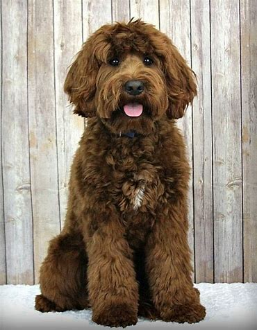
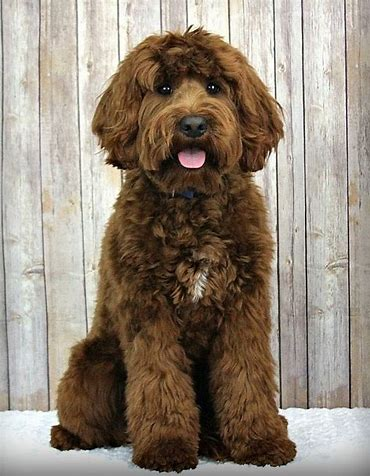

Meet Our Cute Pets


Smoothie
Smoothie has been dubbed the "world's most photogenic cat", and her emerald eyes and golden fur have even inspired a mural in New Zealand. Smoothie also has an aptly-named brother named Milkshake, and the two are often featured together across social media platforms.
She became an internet sensation with 2.3 million followers on her smoothiethecat Instagram account.
Photo Gallery


Likes
- Belly rubs
- Playing tug-of-war
- Sneaking onto the couch
Peddie
Peddie, the Golden Retriever, is a charming and lively companion known for his beautiful coat and playful nature. He's a perfect partner for outdoor fun, loved for his loyalty and gentle disposition.
Peddie's intelligence and friendly demeanor make him a beloved member of his family and a source of joy for everyone who knows him.
Photo Gallery


Likes
- Swimming
- Running in the park
- Meeting new friends
Fitz
Loves chasings tennis balls, chipmunks, squirrels, and birds. Often found sitting by the fire in wintertime, and in sun patches when available. He’s energetic, mischievous, and easily bored. He loves people and gets grumpy if left without a lap too long.
Loves barking up trees, running around on the lawn, and digging in the dirt looking for moles. He especially likes getting treats and whines when he comes inside and doesn’t get a snack.
Photo Gallery


Likes
- Blankets
- Being warm
- Barking
Juno
No one knows exactly what breed Juno is, but that makes him all the more special. He was adopted before he was one year old; despite this and his German shepherd-esque looks, he stayed close to the same size, hovering around 50 lbs into adulthood. At the weathered age of ten years old, Juno is dealing with hip problems, but manages to stay in good spirits.
One of Juno’s favorite pastimes is finding the dirtiest puddle within a one-mile radius and making sure every inch of him makes contact with said puddle. If rolling around in dirt was an Olympic sport, Juno would have been the one that facilitated its inclusion into the Olympics.
Photo Gallery


Likes
- Human food
- Head pats
- Sleeping
Bacon Q Dog
Bacon Q. Dog is a 9yr old labradoodle. He prefers to spend his days lounging among the three different beds/couches that his family has gifted him. He enjoys a walk or two around the neighborhood, as long as he can pretend that he doesn't see any of the other animals to avoid the embarrassment of not wanting to admit he has no wolf-like skills in chasing them.
At night just as the rest of the family is ready to relax, Bacon suddenly wants to release all of his energy. He will place his toys on a mini couch and frantically drag the couch around, giving his toys "a ride." There is also a lot of rolling. Lots and lots of rolling.
Photo Gallery

 


Likes
- Belly rubs
- Playing tug-of-war
- Sneaking onto the couch